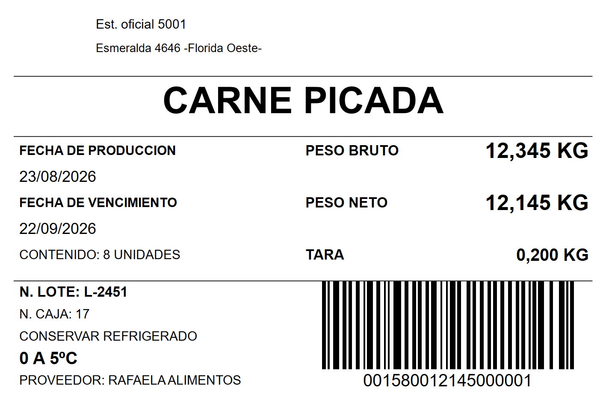

Programador · Gran Buenos Aires
Software que se ajusta a tu operación diaria
Armo sistemas de facturación, mostrador y gestión — en escritorio, web o Linux — con la tecnología que cada caso pide. Si hace falta, también me ocupo de tus equipos: un solo contacto para el sistema y el hardware.
Servicios
Trabajo orientado a negocios que necesitan software estable y soporte cercano.
-
Sistemas administrativos
Aplicaciones de gestión en formato consola o ventana, adaptadas al flujo de trabajo de cada cliente.
-
Facturación y ventas
Sistemas de facturación y punto de venta (mostrador), desarrollados con Harbour y bases SQL Server o SQLite.
-
Aplicaciones Python
Desarrollos de escritorio con Python y PySide para interfaces gráficas modernas y multiplataforma.
-
Aplicaciones web
Sitios y sistemas web con Python Flask; procesamiento y reportes de datos con pandas cuando hace falta.
-
Sistemas en Linux
Desarrollo y despliegue de sistemas en entornos Linux cuando el proyecto lo requiere, con sólidos conocimientos en administración y uso del sistema.
-
Mantenimiento de equipos
Instalación, mantenimiento y reparación de computadoras y periféricos para hogar y negocio.
Productos
Sistemas propios, listos para poner en marcha y adaptables a cada operación.
Pesaje y etiquetado · Windows
P2Eti ST
Lee el peso de la balanza, completa los datos del producto, arma el código de barras e imprime la etiqueta. Pensado para frigoríficos, distribuidoras de alimentos y depósitos que despachan por kilo.
- El peso llega solo desde la balanza
- El diseño de la etiqueta se edita en Excel
- Imprime en cualquier impresora de Windows
- Historial de kilos y etiquetas por período

Sistemas desarrollados
Algunos ejemplos en uso: facturación, mostrador, stock e informes. Hacé clic en una captura para verla en detalle.
Tecnologías
Stack habitual en mis proyectos.
Harbour— aplicaciones de escritorioSQL Server·SQLite— bases de datosPython·PySide— aplicaciones de escritorioFlask·pandas— aplicaciones web y datosLinux— desarrollo, despliegue y administración de sistemas- Consola, ventana o web según requerimiento
Perfil profesional
Experiencia orientada a soluciones que funcionan en el día a día del negocio.
Programador con amplia trayectoria con mas de 20 años de experiencia en el desarrollo de sistemas administrativos para el sector comercial e industrial. Mi especialidad son las soluciones prácticas: sistemas que los usuarios realmente usan, que no fallan y que se adaptan a cómo trabaja cada empresa.
Trabajo con tecnologías consolidadas como Harbour sobre bases relacionales, y con el ecosistema de Python — según lo que el proyecto necesite, no lo que esté de moda.
Además del software, brindo soporte técnico directo sobre equipos: instalación, mantenimiento y reparación. Un solo interlocutor para software y hardware.
- Ubicación
- Laferrere, Gran Buenos Aires
- Modalidad
- Remoto · Presencial (GBA)
- Proyectos
- Individuales y PyMES
- Soporte
- Post-entrega disponible
- Estado
- Disponible para proyectos
Contacto
¿Tenés un proyecto en mente o necesitás una consulta técnica? Escribime directamente. Respondo con brevedad y sin rodeos.